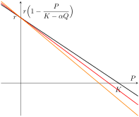
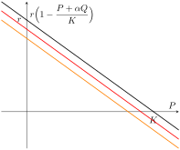
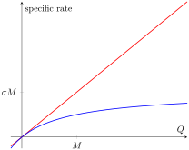
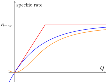
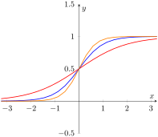

Once we have formulated a flow diagram for our system, we need to establish a mathematical model by determining how to compute each of the rates. In unusual cases, we might have plentiful data with which we can estimate actual quantitative relationships between the state variables and the relevant rates. More commonly, we have qualitative assumptions about the nature of the relationship defining the rates. We use these qualitative assumptions to establish a general form of the relationship involving parameters. Often, we can then apply analysis on the model to understand possible behaviors as they relate to parameter values.
In this section, we explore some of common qualitative relationships between state variables and rates associated with those variables. Qualitative descriptions include mathematical descriptions of relationships including traits of increasing and decreasing as well as concavity and asymptotic behavior. By identifying likely traits associated with a system of interest, we can identify possible model equations to use for the rates.
Subsection3.2.1Linear Rates and Linear Combinations
The simplest rate of all is a constant rate. We use a constant rate when the rate at which a particular event does not depend on the state variables. Usually, these rates are related to an external environment. For example, we might use a constant rate for immigration to describe the rate at which individuals arrive from an external population that we are not modeling. Or we might use a constant rate to describe how fast doctors can treat sick patients.
The next simplest model for a rate of change is one that is proportional to a single state variable. We can usually think of these rates as saying that each individual (or other relevant unit being measured) represented by that variable contributes a specific amount per unit time and that amount does not depend on the total number of individuals. By multiplying by the total number of individuals (or total quantity), we have a rate that is the sum of the contributions of the individuals.
Example3.2.1.
Suppose a population of size \(P\) has a growth term that comes from a constant immigration rate of 100 individuals per year and a constant per capita growth rate of 2\% per year. The immigration will be modeled using a constant rate and the population growth will be represented as begin proportional to the population size. The total growth rate would then be modeled by
Note that this model only describes the rate of a single flow that would be part of a bigger differential equation.
Sometimes, a rate is represented as the sum of multiple contributions, each of which is defined by a constant per capita. For example, suppose in an age-based model that three-year old plants produce a different number of seeds than a four-year old plant. If we let \(P_3\) and \(P_4\) represent the number of plants of age three and four, respectively, and \(s_3\) and \(s_4\) are the average number of seeds produced by three- and four-year old plants, respectively, then the total number of seeds produced would be given by
We call such a sum of proportional terms a linear combination, in this case a linear combination of \(P_3\) and \(P_4\text{,}\) or even of \(P_0,P_1,P_2,P_3,P_4\) if we realized that all missing terms had proportionality constants of zero. To be a linear combination, all of the proportionality constants must really be constants, not other variables, although we might represent them as parameters. We will later learn that rates that are linear combinations of the state variables are one of the most important representations in order to do analysis.
Subsection3.2.2Logistic Growth with Functional Dependence
One strategy for modeling systems is to repurpose models that were used for single populations in a way that informs the system. For example, when considering a single population \(P\text{,}\) one way to model the growth of that population so that it had a carrying capacity was to use the logistic growth model,
The motivation behind this formula is that the per capita growth rate \(r(1-\frac{P}{K})\) starts at \(r\) when \(P\) is small and linearly decreases until it is zero at the carrying capacity \(K\text{.}\) If \(P\) starts above \(K\text{,}\) then the per capita growth is negative and the population decreases. Thus, this model can be considered to include both births and deaths in a combined formula.
We can repurpose this model for use in a system. One way is to use the model for the rate without change to account for that growth and death rates of the system that only depend on the population. We would then add additional rate terms to account for growth or loss that depended on other variables.
Alternatively, we might modify the logistic growth rate formula to account for the presence of other variables. For example, we might consider the carrying capacity to depend on another population \(Q\text{.}\) That is, we can think of the carrying capacity \(K\) as a decreasing function of \(Q\text{,}\) such as with a linear function \(K(Q) = K_0 - \alpha Q\) so that the per capita growth rate for \(P\) now has the form \(r(1-\frac{P}{K(Q)})\text{.}\) The new effective growth rate that would be used in the differential equation is the per capita rate times the population \(P\text{,}\) given by
\begin{equation*}
r P (1-\frac{P}{K(Q)}) = r P (1 - \frac{P}{K_0 - \alpha Q}).
\end{equation*}
We can illustrate the effect of the population \(Q\) by graphing the effective per capita growth rate \(r(1-\frac{P}{K(Q)})\) as a function of \(P\) using different values of \(Q\text{.}\) This is illustrated in the figure below. Notice that for small populations \(P \approx 0\text{,}\) the per capita growth is not changing much. It is only when \(P\) starts to be larger that the effect of \(Q\) is observed. This model formula seems to require an assumption that competition only occurs when both populations are large.

Figure3.2.2.Per capita growth rate for a population \(P\) where the carrying capacity \(K\) depends on another population \(Q\text{.}\)
It might be a better modeling assumption to suppose that the per capita growth rate is affected at both high and low populations \(P\) in the presence of another population \(Q\text{.}\) Consider an alternate modeling strategy where we think of \(K\) as representing total population capacity units in the environment. We can then think of the term \(1-P/K\) in the per capita growth formula as representing the fraction of growth capacity remaining.
The presence of a population \(Q\) uses up some of that capacity so that we want to reduce the fraction of growth capacity due to \(Q\) as well as \(P\text{.}\) However, one individual of \(Q\) may not occupy the same number of capacity units as an individual from \(P\text{.}\) We use a per capita growth rate for \(P\) modeled by the expression
\begin{equation*}
r (1 - \frac{P}{K} - \frac{\alpha Q}{K}) = r P (1- \frac{P+\alpha Q}{K}).
\end{equation*}
The graph of the per capita growth rate corresponding to increasing values of \(Q\) is given below. The figure illustrates a more uniform reduction on the growth rate due to \(Q\) for both low and high values for \(P\text{.}\)

Figure3.2.3.Per capita growth rate for a population \(P\) where the another population \(Q\) occupies part of the carrying capacity available for \(P\text{.}\)
Similar strategies can be adopted for any model that incorporates density dependence. For example, if a growth rate for an isolated population includes an exponential decay term to incorporate a decreasing rate due to population density like \(r P e^{-P/K}\text{,}\) then the presence of a second population that adds to the crowding could be incorporated with a term like \(r P e^{-(P+\alpha Q)/K}\text{.}\) In the same way as for the logistic growth term, this consider the crowding factor as having \(Q\) individuals impact the growth rate in an equivalent manner as having an extra \(\alpha Q\) individuals in the \(P\) population.
Subsection3.2.3Law of Mass Action for Interactions
In simple chemical reactions, the principle of mass action states that the rate of a reaction is proportional to the product of the concentrations of the reactants. The premise behind this principle is that the chemical reaction occurs in a well-mixed solution and that the number of molecular interactions of the reactants that occur per unit time will be proportional to the product of the concentrations. Of those interactions, some fraction will result in the reaction proceeding.
Many interactions in settings other than chemical reactions can also be modeled in a similar way. Suppose that there are two populations \(P\) and \(Q\) that are interacting to create certain events (e.g., causing infections, predators killing prey, competition reducing a birth rate). The law of mass action can arise any time we can think of the events being counted as being the sum of contributions from each individual in population \(P\) such that the average number of events per individual is itself proportional to the size of the population \(Q\text{.}\) In other words, the assumption is that the number of events per individual in population \(P\) will double if the population \(Q\) doubles, will triple if the population \(Q\) triples, and so on.
Example3.2.4.
The logistic growth model with total capacity \(K\) can be interpreted as a law of mass action interaction.
Suppose a population \(P\) grows according to a logistic growth law,
\begin{equation*}
\frac{dP}{dt} = r P (1 - \frac{P}{K}),
\end{equation*}
in the absence of population \(Q\text{.}\) Suppose that individuals from populations \(P\) and \(Q\) compete in such a way that \(P\) effectively has an additional death rate resulting from competitive interactions with \(Q\text{.}\) For the interactions to obey a law of mass action, we would require that the per capita death rate due to competition is proportional to the population size \(Q\text{,}\) say an average of \(\sigma Q\) deaths per \(P\) individual per unit time. Then the total death rate due to competition would be \(\sigma Q \cdot P = \sigma P Q\text{.}\) The modified model that includes the deaths due to competition would then be given by
\begin{equation*}
\frac{dP}{dt} = r P (1 - \frac{P}{K}) - \sigma P Q.
\end{equation*}
This model is mathematically equivalent to the differential equation
Thus, the two models are equivalent where \(\sigma = \frac{r \alpha}{K}\text{.}\) This equivalence is another reason that this model for competition is preferred.
Subsection3.2.4Saturating Functional Response
The law of mass action often makes good sense when the values of the state variables are not too big. However, there are often cases where we expect the proportional relation assumed for mass action to fail. Consider the example of a population that is consuming a resource (e.g., predators consuming prey, bacteria consuming a sugar substrate, or herbivores consuming vegetation). When the resource is limited, it makes sense that each individual in the population could double the amount of resource it consumes if the resource itself were to double. However, when the resource is abundant, doubling the resource likely has little effect on consumption rate.
The rate of consumption is not something that can increase indefinitely. The rate is limited due to the ability of the individual to complete a consumption event. A predator must spend the time to catch its prey, eat the prey, and perhaps even digest the prey before undertaking another predation event. A bacteria uses active transport to bring glucose from the environment into the cell for metabolism and the bacteria has a limited number of sites to perform this operation. An herbivore takes time to eat vegetation and doubling the amount of vegetation does not increase the rate of consumption if the herbivore is already eating full-time.
We need to adapt our model to account for saturation. Saturation corresponds to the mathematical idea of a horizontal asymptote, where a function effectively behaves like a constant when a variable becomes sufficiently large. Any function that has a horizontal asymptote might conceivably be used as a model for saturation. One of the most commonly used models is a simple rational function.
Recall from our discussion of mass action that we could think of \(\sigma Q\) as counting the number of interaction events per individual in the \(P\) population. We modify this term to incorporate a horizontal asymptote using a modified form \(\frac{\sigma Q}{1 + Q/M}\text{.}\) The figure below illustrates the graphs of the specific mass action rate \(\sigma Q\) and the saturating specific rate.

Figure3.2.5.Specific rate of interactions per unit of \(P\) resulting from \(Q\) individuals showing mass action \(\sigma Q\) and saturating \(\frac{\sigma Q}{1+Q/m}\text{.}\)
For small values of \(Q\text{,}\) the saturating model behaves almost identically to the law of mass action. However, for larger values of \(Q\text{,}\) the specific rate of events saturates at a value of \(\sigma M\text{.}\) The value \(M\text{,}\) which is measured in the same units as \(Q\text{,}\) corresponds to that value of \(Q\) for which the specific rate is exactly half way to saturation. Thus, \(M\) is called the half-saturation level for \(Q\text{.}\)
In ecology, these interaction curves describe consumption rates and are called the functional response to the food density. An ecologist named C. S. Holling proposed a classification of the functional response curves as falling under three general categories. A Type I functional response corresponds to the law of mass action, although it may also be piecewise linear, switching to a constant saturating rate. The example above is consider a Type II functional response because it is an increasing and concave down function. A Type III functional response would be concave up at low food densities and then switch to concave down as consumption approached its saturating level. The figure below illustrates typical examples.

Figure3.2.6.Illustration of Type I (red), Type II (blue), and Type III (orange) functional response curves.
Subsection3.2.5Switching Functional Response
The Type III functional response captures a new idea. Both Type I and Type II functional responses have the characteristic that at low food densities, consumption essentially follows a law of mass action. That is, each organism is consuming the food at a rate that is proportional to the density of that food. This might reflect the idea that the organism is eating the food as it is encountered. However, a Type III functional response that is concave up for low food densities does not follow this pattern. Instead, it is as if the organism is rejecting opportunities to consume the food at low densities and only begins to consume in proportion to encounters if the food density exceeds some threshold. This is an example of switching behavior.
Switching occurs when the dynamic relationships change according to different conditions. Typically, we consider switching in relationship to individual state variables. When a state variable is below a threshold, one dynamic relationship exists; when the state variable is above a threshold, another dynamic relationship exists. The cross-over is often continuous so that near the threshold, the dynamics is an intermediate combination of the two relationships.
Functions that have two different horizontal asymptotes and a smooth connection between them are often used for switching functions. Combinations of exponential functions provide one example.
The steepness of the transition between the asymptotes is determined by the magnitude of \(k\)—the larger the magnitude of \(k\text{,}\) the steeper the transition will be. The figure below illustrates several examples with \(k \gt 0\text{.}\)

Figure3.2.8.Graph of \(y=f(x)=\frac{e^{kx}}{e^{kx}+1}\) with values \(k=1\) (red), \(k=2\) (blue) and \(k=3\) (orange).
The graph of this switching function is symmetric around the point \((0,\frac{1}{2})\text{.}\) At this point, the function is exactly half-way between the two limiting values. We consider this point to be the location of the switch. Mathematically, this point is also an inflection point, a consequence of the symmetry of this particular function. We can create a switching function at any desire location by applying a horizontal shift. It helps if we rewrite our original formula
Another common example of a function used for switching between two values involves the arctangent function. Recall that the arctangent function is the inverse of the trigonometric tangent function, restricted to a domain \((-\frac{\pi}{2},\frac{\pi}{2})\text{.}\) Because the tangent function has all values in \((-\infty,\infty)\text{,}\) the inverse function will be defined with a domain \((-\infty,\infty)\) and a range of \((-\frac{\pi}{2}, \frac{\pi}{2})\text{.}\) The vertical asymptotes of the tangent become horizontal asymptotes of the arctangent. This is precisely the behavior we desire from a switching function.
Example3.2.9.
The arctangent function can be used as a switching function. The left and right horizontal asymptotes are given by
and the function is symmetric around the point at \((0,0)\text{.}\) We can construct a function that goes between values 0 and 1 by dividing by \(\pi\) and then adding \(\frac{1}{2}\text{:}\)
(Sometimes we want to go between values \(-1\) and \(1\text{;}\) we do this by just multiplying by \(\frac{2}{\pi}\text{.}\))
We can change the steepness of the transition by a horizontal compression with factor \(k\) and the location around \(x=c\) by a horizontal shift to get
Figure3.2.10.Graph of \(y=f(x)=\frac{1}{\pi}\arctan\big(k(x-c)\big)+\frac{1}{2}\) with values \(k=1, c=1\) (red), \(k=2, c=1\) (blue) and \(k=3, c=-1\) (orange).